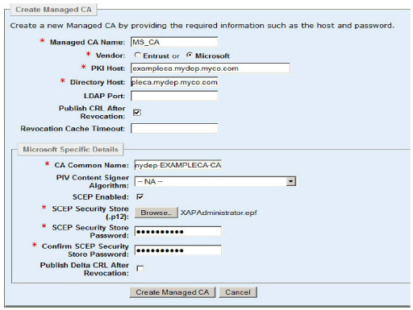
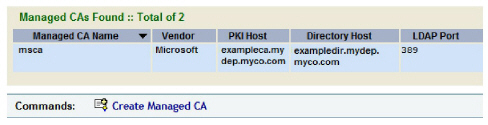

|
IdentityGuard Server 13.0 Administration Guide |
|
IdentityGuard Server 13.0 Administration Guide |
Follow the instructions to configure a Microsoft managed CA. This involves specifying the Microsoft CA’s host name or IP address as well as a few other pieces of information, in Entrust IdentityGuard.
To configure a Microsoft managed CA
1. Log in to the Entrust IdentityGuard Administration interface. For details, see Logging in and out of the Administration interface.
2. From the top menu, click Certificates.
3. Click List Managed CAs.
4. Click Create Managed CA.
5. In the Managed CA Name field, enter a globally unique friendly name for the CA.
6. For the Vendor, select Microsoft.
7. In the PKI Host field, enter the fully qualified host name or IP address of the computer hosting your Microsoft CA.
8. In the Directory Host field, enter the fully qualified domain name or IP address of the computer running the LDAP directory that your Microsoft CA is using. This might be the same computer as the Microsoft CA.
9. In the LDAP Port field, enter the port on which the LDAP directory service is running. If you do not specify a port, the default is used (389). Ignore the LDAP User, LDAP Password, and LDAP Uses SSL options. They apply only to Entrust CAs.
10. Enable Publish CRL After Revocation if you want to have your Certificate Revocation List (CRL) republished immediately after you revoke a user’s certificate through the Entrust IdentityGuard Administration interface. The CRL will be updated immediately with the newly revoked certificate, and Entrust IdentityGuard clients will instantly no longer trust it. If you leave Publish CRL After Revocation disabled, then the CRL is published on a scheduled interval defined in your CA, typically once every 24 hours, so there may be a delay between the time the certificate is revoked, and the time your clients no longer trust it.
There are benefits and drawbacks to enabling Publish CRL After Revocation. The benefit, as mentioned earlier, is that revocations take immediate effect; the drawback is that there is an increased load on the CA because it will be republishing its CRL more frequently.
Entrust recommends that you enable Publish CRL After Revocation unless you are experiencing performance issues.
The default is deselected.
11. In the CA Common Name field, enter the common name of the CA. You can find it by going to your CA computer, opening the Windows Server Manager, and looking under Roles > Active Directory Certificate Services. It is the item with the green check mark ( )that contains folders for Revoked Certificates, Issued Certificates, and so on.
)that contains folders for Revoked Certificates, Issued Certificates, and so on.
12. Leave the PIV Content Signer Algorithm as is. This setting is for smart credentials.
13. If you are using SCEP, select the SCEP Enabled check box, and then complete the SCEP fields as follows:
a. In the SCEP Security Store (.p12) field, browse for the IGSCEPadministrator.p12. You should have created this Security Store in Step 7: Create SCEP credentials.
b. In the SCEP Security Store Password and Confirm SCEP Security Store Password fields, enter the password for IGSCEPadministrator.p12.
14. Enable Publish Delta CRL After Revocation if you want to publish a list of only those certificates revoked since the last time the Certificate Revocation List (CRL) was published (either on the scheduled interval or on demand using the Publish CRL After Revocation option). For more information, see Step 12.
Your page looks similar to the following.

15. Click Create Managed CA.
16. Your CA appears in the list. Leave the page open and proceed to the next section.
